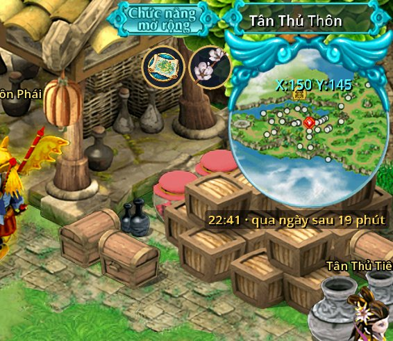

Đồng hồ máy chủ
- Ở đâu
- Dưới bản đồ nhỏ
- Qua ngày
- 23:00 mỗi ngày
- Qua tuần
- 23:00 Chủ nhật

Dòng giờ máy chủ (giờ Việt Nam) kèm thời gian còn lại tới lúc qua ngày, ví dụ "22:41 · qua ngày sau 19 phút". Máy bạn để sai giờ cũng không lệch.
- Lúc 23:00, sư môn, truy bắt, phó bản, Hoạt động hôm nay và các việc hằng ngày khác làm mới.
- Còn dưới 30 phút thì chữ chuyển vàng. Rê chuột lên dòng giờ để xem những việc sẽ làm mới.
- Khung tin nhắc lúc 22:30 và 22:55, kèm việc hôm nay chưa xong.